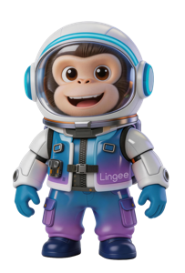

桌面 APP 无法像网页一样自动化走查，我想到一个解法：让 AI 像人一样坐在电脑前操作—打开应用、拖拽窗口、点击，通过截图判断视觉问题。
整个过程不需要写测试脚本，AI 就像一个刚入职的测试同学，但速度比人快 3-5 倍，而且不会遗漏检查项。
AI 访问设计规范站，提取间距、字号、圆角、按钮尺寸等数值作为走查基准。
解包应用代码，批量检查颜色、圆角、字号是否使用了设计变量，按模块统计覆盖率。可与截图并行。
AI 操控桌面打开应用，截取默认窗口、窄窗口、全屏等多种状态，并进行基础交互操作（点击、输入、下拉等）截图取证。
如果提供了 Figma 链接，通过 API 拉取设计稿截图，与实际页面逐项对比差异。
将所有发现按严重/中等/轻微分级，生成带 Tab 切换的 HTML 报告，包含文件级定位。
实验下来，有几个比较明确的结论：
响应式 & 布局问题发现率很高。AI 可以系统地测试多种窗口尺寸，不遗漏截断、溢出、列数不降等问题。这类问题人工走查经常漏。
规范偏差检查很稳定。只要规范数值明确，AI 就能准确判断实际实现是否偏离，不受主观影响。
视觉美感判断还做不了。颜色搭配是否和谐、留白是否舒适、视觉层次是否清晰 — 这些需要设计直觉的问题，AI 目前只能给出“符合/不符合规范”的二元判断。
交互逻辑深度不足。对于需要多步骤、多状态联动的复杂业务逻辑（如审批流程），AI 只能测试表层 UI，无法理解业务流程是否正确。
代码扫描能发现人眼看不到的问题。通过解包代码，可以批量找出所有没用设计变量的地方，按模块拆分，精准定位哪些业务需要改进。这类问题人工走查根本发现不了。
Figma 对比让设计还原可量化。直接拿设计稿和实现截图对比，自动发现名称格式、状态缺失、布局差异等问题，比人工逐像素对比高效得多。
回归验证很高效。代码修复后重新跑一遍，自动生成新的问题清单，之前发现的问题是否还在一目了然。
未来方向：AI 走查 + 人工审核。AI 负责批量扫描布局、代码规范性问题和设计还原度，人工聚焦在设计意图和业务逻辑的验证上，效率可以提升 3-5 倍。